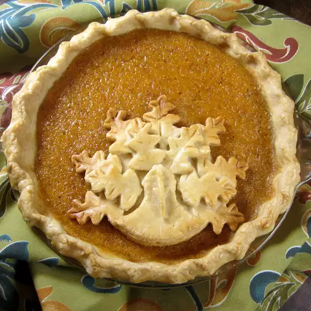

Butternut Squash Pie

Description
My grandmother taught me how to make this recipe while I was a teenager working on her farm in the summers. For people that find the taste of pumpkin a little strong or just want a change this is a milder but still delicious pie. Hope you like it. Top with whipped cream!
Ingredients
- 2 prepared pie crusts
- 2 ½ cups cooked butternut squash cubes
- 5 eggs
- 1 ½ cups brown sugar
- 1 cup milk
- 1 cup heavy whipping cream
- 2 tablespoons all-purpose flour
- 1 teaspoon salt
- 1 teaspoon vanilla extract
- ¾ teaspoon ground nutmeg
Steps
- Preheat oven to 375 degrees F (190 degrees C). Press each pie crust into 2 pie plates.
- Blend butternut squash, eggs, brown sugar, milk, cream, flour, butter, cinnamon, salt, ginger, vanilla extract, nutmeg, and cloves in a blender until smooth; pour into pie crusts.
- Bake in the preheated oven until pies are set in the middle, 35 to 40 minutes.